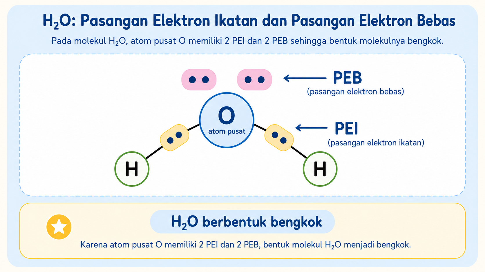

IDENTITAS & INFORMASI LKPD
Isi identitas dulu ya:
📌 Materi: Bentuk Molekul
📘 Capaian Pembelajaran
Pada akhir Fase F, peserta didik mampu memahami sifat, struktur, dan interaksi partikel dalam membentuk berbagai senyawa serta kaitannya dengan sifat zat dalam kehidupan sehari-hari.
🎯 Tujuan Pembelajaran
- Siswa mampu menjelaskan pengertian bentuk molekul berdasarkan susunan pasangan elektron di sekitar atom pusat.
- Siswa mampu mengelompokkan bentuk molekul berdasarkan jumlah pasangan elektron ikatan dan pasangan elektron bebas pada atom pusat.
- Siswa mampu menjelaskan pengaruh pasangan elektron bebas terhadap bentuk molekul.
🔵 Engagement
Pernahkah kamu berpikir bahwa molekul-molekul kecil di sekitar kita ternyata memiliki bentuk ruang yang berbeda-beda? Air yang kita minum tersusun dari molekul H₂O, sedangkan gas karbon dioksida yang kita keluarkan saat bernapas tersusun dari molekul CO₂.
Menariknya, CO₂ dan H₂O sama-sama terdiri dari tiga atom. CO₂ tersusun dari satu atom C dan dua atom O, sedangkan H₂O tersusun dari satu atom O dan dua atom H. Namun, bentuk ruang kedua molekul ini ternyata tidak sama.
🔎 Coba Amati Fenomena Berikut
Perhatikan perbandingan sederhana berikut.
CO₂
CO₂ tersusun dari 1 atom C dan 2 atom O. Jumlah atomnya ada 3. Bentuk molekul CO₂ dikenal linear atau lurus.
H₂O
H₂O tersusun dari 1 atom O dan 2 atom H. Jumlah atomnya juga ada 3. Namun, bentuk molekul H₂O dikenal bengkok.

Ilustrasi bentuk molekul. Bentuk sebenarnya akan dipelajari lebih lanjut pada kegiatan berikutnya.
Menarik, bukan? Dua molekul ini sama-sama terdiri dari tiga atom, tetapi bentuknya tidak sama. CO₂ berbentuk linear, sedangkan H₂O berbentuk bengkok.
Dari fenomena ini, muncul rasa ingin tahu: apakah jumlah atom saja cukup untuk menentukan bentuk molekul? Atau ada faktor lain pada atom pusat yang membuat bentuk molekul menjadi berbeda?
Pada tahap ini, kamu belum harus menjawab dengan benar. Pertanyaan ini akan kamu jawab lebih lengkap setelah mengerjakan seluruh kegiatan LKPD, mulai dari Exploration, Explanation, Elaboration, hingga Evaluation.
❓ Rumusan Masalah
Bagaimana bentuk molekul dapat dikelompokkan berdasarkan jumlah pasangan elektron ikatan dan pasangan elektron bebas pada atom pusat?
💭 Hipotesis Awal
Berdasarkan fenomena CO₂ dan H₂O, tuliskan dugaan awalmu untuk menjawab rumusan masalah. Dugaan ini tidak harus langsung benar.
Untuk Menjawab Pertanyaan Ini Kerjakan kegiatan LKPD berikut secara berurutan!
Setelah semua tahap selesai, kamu akan dapat menjawab pertanyaan utama dengan lebih lengkap dan berdasarkan konsep ilmiah.
🔍 Exploration
Pada tahap Engagement, kamu sudah mengamati fenomena bahwa CO₂ dan H₂O sama-sama terdiri dari tiga atom, tetapi bentuk molekulnya berbeda. CO₂ berbentuk linear, sedangkan H₂O berbentuk bengkok.
Pada tahap Exploration ini, kamu akan menyelidiki penyebab perbedaan bentuk molekul dengan memperhatikan atom pusat, pasangan elektron ikatan, dan pasangan elektron bebas. Sebelum mengisi tabel dan menjawab pertanyaan, bacalah materi pendukung terlebih dahulu.
🧭 Petunjuk Kegiatan Eksplorasi
Setelah membaca materi pendukung, lakukan kegiatan berikut secara berurutan agar kamu tidak bingung saat menentukan bentuk molekul.
- Buka materi pendukung dengan menekan tombol 📚 Baca Materi Dulu.
- Baca materi tentang atom pusat, PEI, PEB, dan pengelompokan bentuk molekul.
- Kembali ke halaman Exploration.
- Amati atau gunakan simulasi PhET Molecule Shapes yang tersedia.
- Pada tampilan "Molecule Shapes" pilih bagian Real Molecules
- Perhatikan beberapa molekul: CO₂, H₂O, BF₃, CH₄, dan NH₃.
- Tentukan atom pusat pada setiap molekul.
- Hitung jumlah pasangan elektron ikatan dan pasangan elektron bebas pada atom pusat.
- Kelompokkan bentuk molekul berdasarkan jumlah PEI dan PEB.
- Setelah tabel selesai, jawab pertanyaan eksplorasi di bagian bawah.
Catatan: Jawaban pada tabel dan pertanyaan eksplorasi harus didasarkan pada materi pendukung, pengamatan model molekul, dan hasil analisismu terhadap jumlah PEI dan PEB.
🧪 Simulasi PhET Molecule Shapes
Gunakan simulasi berikut untuk membantu membayangkan susunan atom dalam ruang. Simulasi ini digunakan sebagai alat bantu visual, sedangkan pengelompokan bentuk molekul tetap dilakukan berdasarkan jumlah PEI dan PEB pada atom pusat.
💡 Jika simulasi tidak muncul, buka langsung: PhET Molecule Shapes
📋 Tabel Eksplorasi
Lengkapi tabel berikut berdasarkan materi pendukung dan hasil pengamatan model molekul. Fokuskan analisismu pada jumlah pasangan elektron ikatan dan pasangan elektron bebas pada atom pusat.
🧠 Pertanyaan Eksplorasi
Jawablah pertanyaan berikut setelah membaca materi pendukung, mengamati simulasi, dan mengisi tabel eksplorasi.
1. Berdasarkan tabel, bagaimana cara menentukan bentuk molekul dari jumlah PEI dan PEB pada atom pusat?
2. CO₂ dan H₂O sama-sama terdiri dari tiga atom. Mengapa bentuk CO₂ linear, sedangkan H₂O bengkok?
3. Bandingkan BF₃ dan NH₃. Keduanya memiliki tiga atom yang terikat pada atom pusat. Mengapa bentuknya berbeda?
4. Apa pengaruh pasangan elektron bebas terhadap bentuk molekul?
5. Berdasarkan hasil eksplorasi, kelompokkan molekul yang memiliki PEB pada atom pusat dan molekul yang tidak memiliki PEB pada atom pusat.
📚 Materi
Bacalah materi ini terlebih dahulu sebelum mengerjakan tahap Exploration. Materi ini akan membantumu memahami cara menentukan dan mengelompokkan bentuk molekul berdasarkan jumlah pasangan elektron ikatan dan pasangan elektron bebas pada atom pusat.
1. Pengertian Bentuk Molekul
Bentuk molekul adalah susunan atom-atom dalam suatu molekul secara tiga dimensi. Bentuk molekul menunjukkan bagaimana atom-atom berada di sekitar atom pusat.
Bentuk molekul penting karena dapat memengaruhi sifat suatu zat, misalnya kepolaran, kemampuan berinteraksi dengan zat lain, dan fungsi molekul dalam kehidupan. Namun pada materi ini, fokus utama kita adalah memahami bagaimana bentuk molekul dapat ditentukan dari jumlah pasangan elektron di sekitar atom pusat.
Inti materi:
Bentuk molekul ditentukan oleh susunan pasangan elektron di sekitar atom pusat.
2. Atom Pusat
Atom pusat adalah atom yang berada di tengah susunan molekul dan menjadi tempat atom-atom lain berikatan. Atom pusat biasanya dapat membentuk lebih dari satu ikatan.
3. Pasangan Elektron Ikatan dan Pasangan Elektron Bebas
Untuk menentukan bentuk molekul, kita perlu memperhatikan pasangan elektron di sekitar atom pusat.
Pasangan Elektron Ikatan / PEI
PEI adalah pasangan elektron yang digunakan untuk membentuk ikatan antara atom pusat dan atom lain.
Pasangan Elektron Bebas / PEB
PEB adalah pasangan elektron pada atom pusat yang tidak digunakan untuk membentuk ikatan.
Contoh: Pada CO₂, atom pusat C memiliki 2 PEI dan 0 PEB. Pada H₂O, atom pusat O memiliki 2 PEI dan 2 PEB. Inilah salah satu penyebab CO₂ berbentuk linear, sedangkan H₂O berbentuk bengkok.

Ilustrasi perbedaan pasangan elektron ikatan dan pasangan elektron bebas pada atom pusat.
4. Teori VSEPR
Teori VSEPR digunakan untuk memprediksi bentuk molekul berdasarkan tolakan pasangan elektron di sekitar atom pusat. Pasangan-pasangan elektron akan saling menjauh agar gaya tolakannya sekecil mungkin.
Pasangan elektron bebas memiliki gaya tolak yang lebih besar dibandingkan pasangan elektron ikatan. Karena itu, keberadaan PEB dapat memengaruhi bentuk molekul dan memperkecil sudut ikatan.
Urutan kekuatan tolakan:
PEB–PEB > PEB–PEI > PEI–PEI
5. Tabel Bentuk Molekul Berdasarkan Teori VSEPR
Tabel berikut menunjukkan bentuk molekul berdasarkan jumlah pasangan elektron di sekitar atom pusat. Gunakan tabel ini untuk membantu mengelompokkan bentuk molekul berdasarkan jumlah PEI dan PEB.
6. Hibridisasi dan Hubungannya dengan Bentuk Molekul
Selain menggunakan teori VSEPR, bentuk molekul juga dapat dipahami melalui teori hibridisasi. Hibridisasi menjelaskan bagaimana orbital-orbital pada atom pusat bergabung membentuk orbital baru yang setara ketika atom pusat membentuk ikatan.
Orbital baru hasil penggabungan tersebut disebut orbital hibrida. Orbital hibrida inilah yang kemudian digunakan untuk membentuk ikatan dengan atom lain atau ditempati oleh pasangan elektron bebas.
Inti sederhana:
Hibridisasi membantu menjelaskan mengapa pasangan elektron di sekitar atom pusat dapat
tersusun dengan bentuk tertentu, misalnya linear, trigonal planar, tetrahedral,
trigonal bipiramida, atau oktahedral.
Catatan: VSEPR → digunakan untuk memprediksi bentuk molekul dari tolakan PEI dan PEB. Hibridisasi → digunakan untuk menjelaskan orbital atom pusat yang membentuk ikatan sesuai bentuk itu.
7. Hubungan Jumlah Pasangan Elektron dengan Hibridisasi
Jumlah pasangan elektron di sekitar atom pusat dapat digunakan untuk memperkirakan jenis hibridisasi. Jumlah pasangan elektron tersebut diperoleh dari jumlah PEI + PEB pada atom pusat.
Cara cepat: Hitung jumlah PEI + PEB pada atom pusat. Jika jumlahnya 4, maka hibridisasinya sp³. Contohnya CH₄, NH₃, dan H₂O sama-sama memiliki jumlah pasangan elektron total 4 pada atom pusat, sehingga sama-sama berkaitan dengan sp³. Namun, bentuk molekulnya dapat berbeda karena jumlah PEB-nya berbeda.
8. Contoh Hibridisasi pada NH₃
Nitrogen memiliki 5 elektron valensi. Elektron-elektron tersebut menempati satu orbital s dan tiga orbital p. Pada atom nitrogen, terdapat tiga elektron tidak berpasangan yang dapat digunakan untuk membentuk ikatan dengan atom H, serta satu pasangan elektron bebas.
Ketika nitrogen berikatan dengan tiga atom hidrogen membentuk molekul NH₃, orbital pada atom nitrogen mengalami hibridisasi. Satu orbital s dan tiga orbital p bergabung membentuk empat orbital hibrida sp³.
Dari empat orbital hibrida sp³ pada atom N:
• tiga orbital digunakan untuk membentuk tiga ikatan N–H,
• satu orbital ditempati oleh pasangan elektron bebas.
Karena pada atom pusat N terdapat 3 PEI dan 1 PEB, bentuk molekul NH₃ bukan tetrahedral sempurna, tetapi trigonal piramida. Pasangan elektron bebas tetap menempati ruang dan memberikan tolakan yang memengaruhi susunan atom H di sekitar N.
Kesimpulan: NH₃ memiliki hibridisasi sp³ karena jumlah PEI + PEB pada atom pusat N adalah 4. Namun bentuk molekulnya adalah trigonal piramida karena satu dari empat orbital hibrida ditempati oleh pasangan elektron bebas.
6. Langkah Memprediksi Bentuk Molekul
Bentuk molekul dapat diprediksi dengan memperhatikan jumlah pasangan elektron di sekitar atom pusat. Pasangan elektron tersebut terdiri atas pasangan elektron ikatan atau PEI dan pasangan elektron bebas atau PEB.
- Tentukan atom pusat dalam molekul.
- Hitung jumlah pasangan elektron ikatan atau PEI pada atom pusat.
- Hitung jumlah pasangan elektron bebas atau PEB pada atom pusat.
- Jumlahkan PEI dan PEB untuk menentukan jumlah pasangan elektron di sekitar atom pusat.
- Tentukan rumus umum bentuk molekul, misalnya AX₂, AX₃, AX₂E, AX₄, AX₃E, dan seterusnya.
- Tentukan bentuk molekul berdasarkan tabel bentuk molekul.
Keterangan: A menyatakan atom pusat, X menyatakan atom yang terikat pada atom pusat, dan E menyatakan pasangan elektron bebas pada atom pusat.
Contoh Prediksi Bentuk Molekul
Contoh 1 — CO₂
- Atom pusat: C.
- Jumlah PEI pada atom pusat: 2.
- Jumlah PEB pada atom pusat: 0.
- Jumlah pasangan elektron di sekitar atom pusat: 2.
- Bentuk molekul: linear.
Contoh 2 — H₂O
- Atom pusat: O.
- Jumlah PEI pada atom pusat: 2.
- Jumlah PEB pada atom pusat: 2.
- Jumlah pasangan elektron di sekitar atom pusat: 4.
- Bentuk molekul: bengkok.
Kesimpulan Materi
Bentuk molekul dapat diprediksi dan dikelompokkan berdasarkan jumlah pasangan elektron ikatan dan pasangan elektron bebas pada atom pusat. Molekul yang jumlah atomnya sama belum tentu memiliki bentuk yang sama, karena keberadaan pasangan elektron bebas dapat memengaruhi susunan atom dalam ruang.
🟡 Explanation
Pada tahap Exploration, kamu sudah membaca materi pendukung, mengamati model molekul, mengisi tabel atom pusat, PEI, PEB, jumlah pasangan elektron, dan bentuk molekul. Sekarang, jelaskan kembali hasil eksplorasimu dengan bahasamu sendiri.
Jelaskan bukan hanya jawabannya, tetapi juga alasan mengapa kamu menjawab seperti itu. Gunakan hasil tabel Exploration sebagai dasar penjelasanmu.
🎤 Penjelasan Pemahaman Siswa
Jawablah pertanyaan berikut berdasarkan tabel eksplorasi dan materi pendukung. Gunakan istilah atom pusat, PEI, PEB, dan bentuk molekul dengan tepat.
1. Berdasarkan hasil tabel Exploration, bagaimana cara mengelompokkan bentuk molekul berdasarkan jumlah PEI dan PEB pada atom pusat?
2. Mengapa CO₂ berbentuk linear, sedangkan H₂O berbentuk bengkok, padahal keduanya sama-sama terdiri dari tiga atom?
3. Bandingkan BF₃ dan NH₃. Mengapa BF₃ berbentuk trigonal planar, sedangkan NH₃ berbentuk trigonal piramida?
4. Apa pengaruh pasangan elektron bebas terhadap bentuk molekul dan sudut ikatan?
5. Mengapa jumlah pasangan elektron total yang sama belum tentu menghasilkan bentuk molekul yang sama?
🔁 Meninjau Kembali Hipotesis Awal
Buka kembali hipotesis awalmu pada tahap Engagement. Setelah membaca materi, mengamati model molekul, dan mengisi tabel, apakah hipotesismu sudah tepat? Tuliskan perbaikan atau penguatan hipotesismu.
💬 Simpan Jawaban dan Lihat Umpan Balik
Setelah selesai menjawab semua pertanyaan Explanation, klik tombol berikut. Jawabanmu akan disimpan dan dikunci, lalu pembahasan akan muncul sebagai umpan balik otomatis.
⚠️ Setelah menekan tombol ini, jawaban tidak dapat diubah kembali sampai jawaban akhir dikirim ke spreadsheet.
✅ Umpan Balik Explanation
Bentuk molekul dapat dikelompokkan dengan menentukan atom pusat, menghitung jumlah pasangan elektron ikatan atau PEI, menghitung jumlah pasangan elektron bebas atau PEB, lalu mencocokkan jumlah PEI dan PEB tersebut dengan pola bentuk molekul.
CO₂ memiliki atom pusat C dengan 2 PEI dan 0 PEB, sehingga bentuknya linear. H₂O memiliki atom pusat O dengan 2 PEI dan 2 PEB. Keberadaan 2 PEB pada atom pusat menyebabkan bentuk H₂O menjadi bengkok.
BF₃ memiliki atom pusat B dengan 3 PEI dan 0 PEB, sehingga bentuknya trigonal planar. NH₃ memiliki atom pusat N dengan 3 PEI dan 1 PEB, sehingga bentuknya trigonal piramida. Jadi, keberadaan PEB menyebabkan bentuk molekul berubah.
Pasangan elektron bebas memiliki gaya tolak lebih kuat dibandingkan pasangan elektron ikatan. Karena itu, PEB dapat menekan posisi pasangan elektron ikatan, mengubah bentuk molekul, dan memperkecil sudut ikatan.
CH₄, NH₃, dan H₂O sama-sama memiliki 4 pasangan elektron total di sekitar atom pusat. Namun CH₄ memiliki 4 PEI dan 0 PEB sehingga berbentuk tetrahedral, NH₃ memiliki 3 PEI dan 1 PEB sehingga berbentuk trigonal piramida, sedangkan H₂O memiliki 2 PEI dan 2 PEB sehingga berbentuk bengkok.
Hipotesis yang baik seharusnya menyebutkan bahwa bentuk molekul tidak hanya dipengaruhi oleh jumlah atom, tetapi juga oleh jumlah PEI dan PEB pada atom pusat. PEB dapat memengaruhi susunan atom dalam ruang sehingga bentuk molekul dapat berbeda.
🔐 Kunci Jawaban Guru — Explanation
Catatan: Jawaban siswa tidak harus sama persis dengan kunci berikut. Jawaban dianggap baik jika siswa mampu menjelaskan konsep dengan bahasanya sendiri dan tetap menghubungkan atom pusat, PEI, PEB, dan bentuk molekul.
-
Cara mengelompokkan bentuk molekul:
Tentukan atom pusat, hitung PEI dan PEB pada atom pusat, jumlahkan PEI dan PEB, lalu tentukan bentuk molekul berdasarkan pola atau tabel VSEPR. -
CO₂ dan H₂O:
CO₂ memiliki 2 PEI dan 0 PEB pada atom pusat C sehingga berbentuk linear. H₂O memiliki 2 PEI dan 2 PEB pada atom pusat O sehingga berbentuk bengkok. -
BF₃ dan NH₃:
BF₃ memiliki 3 PEI dan 0 PEB pada atom pusat B sehingga berbentuk trigonal planar. NH₃ memiliki 3 PEI dan 1 PEB pada atom pusat N sehingga berbentuk trigonal piramida. -
Pengaruh PEB:
PEB memiliki tolakan lebih kuat daripada PEI sehingga dapat mengubah bentuk molekul dan memperkecil sudut ikatan. -
Jumlah pasangan elektron total sama, bentuk berbeda:
CH₄, NH₃, dan H₂O sama-sama memiliki 4 pasangan elektron total, tetapi jumlah PEB-nya berbeda. Perbedaan jumlah PEB menyebabkan bentuk molekul berbeda. -
Revisi hipotesis:
Bentuk molekul dipengaruhi oleh jumlah PEI dan PEB pada atom pusat. Molekul dengan jumlah atom yang sama belum tentu memiliki bentuk yang sama karena PEB dapat memengaruhi susunan atom dalam ruang.
🌍 Elaboration
Pada tahap Engagement, kamu sudah mengamati fenomena bahwa CO₂ dan H₂O sama-sama terdiri dari tiga atom, tetapi bentuknya berbeda. CO₂ berbentuk linear, sedangkan H₂O berbentuk bengkok.
Setelah melakukan Exploration dan Explanation, kamu sudah mengetahui bahwa bentuk molekul tidak hanya ditentukan oleh jumlah atom, tetapi juga oleh jumlah pasangan elektron ikatan dan pasangan elektron bebas pada atom pusat.
Sekarang, terapkan konsep tersebut pada masalah baru yang mirip, tetapi lebih kompleks: NH₃ dan BF₃. Keduanya sama-sama memiliki tiga atom yang terikat pada atom pusat, tetapi bentuk molekulnya berbeda.
📖 Dua Molekul dengan Jumlah Atom Terikat yang Sama
Fenomena Baru
Pada kegiatan sebelumnya, kamu telah membandingkan CO₂ dan H₂O. Kedua molekul tersebut sama-sama terdiri dari tiga atom, tetapi bentuk molekulnya berbeda. Dari kegiatan itu, kamu mulai memahami bahwa jumlah atom saja belum cukup untuk menentukan bentuk molekul.
Sekarang, perhatikan dua molekul lain, yaitu NH₃ dan BF₃. Kedua molekul ini juga terlihat memiliki pola yang mirip jika dilihat secara sederhana. Masing-masing memiliki satu atom pusat yang dikelilingi oleh tiga atom lain.
NH₃ dikenal sebagai amonia. Amonia dapat ditemukan dalam beberapa produk pembersih rumah tangga dengan kadar tertentu. Molekul ini tersusun atas satu atom nitrogen dan tiga atom hidrogen. Dalam molekul tersebut, atom nitrogen menjadi atom pusat karena atom hidrogen hanya dapat membentuk satu ikatan.
Sementara itu, BF₃ atau boron trifluorida tersusun atas satu atom boron dan tiga atom fluor. Pada molekul ini, atom boron menjadi atom pusat dan ketiga atom fluor terikat pada atom boron.
Jika hanya dilihat dari jumlah atom yang terikat pada atom pusat, NH₃ dan BF₃ tampak mirip. Keduanya sama-sama memiliki tiga atom yang menempel pada atom pusat. Namun, dalam teori bentuk molekul, ada hal lain yang harus diperhatikan, yaitu susunan pasangan elektron di sekitar atom pusat.
Untuk memahami perbedaan bentuk kedua molekul ini, kamu perlu menggunakan langkah yang sudah dipelajari sebelumnya: menentukan atom pusat, menghitung pasangan elektron ikatan, memeriksa ada atau tidaknya pasangan elektron bebas pada atom pusat, lalu menentukan rumus umum dan bentuk molekulnya berdasarkan teori VSEPR.
Masalah yang harus kamu pecahkan:
Mengapa NH₃ dan BF₃ yang sama-sama memiliki tiga atom terikat pada atom pusat dapat memiliki
bentuk molekul yang berbeda?
Petunjuk Analisis
- Jangan hanya melihat jumlah atom yang terikat pada atom pusat.
- Periksa jumlah pasangan elektron ikatan pada atom pusat.
- Periksa apakah atom pusat masih memiliki pasangan elektron bebas.
- Gunakan rumus umum AXₙEₘ untuk membantu menentukan bentuk molekul.
- Bandingkan hasil analisis NH₃ dan BF₃.
✍️ Pertanyaan Elaborasi
Jawablah pertanyaan berikut berdasarkan bacaan kasus dan konsep yang sudah kamu pelajari. Gunakan istilah atom pusat, PEI, PEB, rumus umum AXₙEₘ, dan teori VSEPR dengan tepat.
1. Tentukan atom pusat pada NH₃ dan BF₃. Mengapa atom tersebut menjadi atom pusat?
2. Bandingkan jumlah pasangan elektron ikatan pada atom pusat NH₃ dan BF₃.
3. Apakah atom pusat pada NH₃ dan BF₃ memiliki jumlah pasangan elektron bebas yang sama? Jelaskan alasanmu.
4. Berdasarkan jumlah PEI dan PEB, tentukan rumus umum AXₙEₘ dan bentuk molekul NH₃ serta BF₃.
5. Simpulkan mengapa NH₃ dan BF₃ dapat memiliki bentuk molekul yang berbeda meskipun sama-sama memiliki tiga atom yang terikat pada atom pusat.
💬 Simpan Jawaban dan Lihat Umpan Balik
Setelah menjawab semua pertanyaan elaborasi, klik tombol berikut. Jawabanmu akan dikunci, lalu pembahasan otomatis akan muncul.
⚠️ Setelah menekan tombol ini, jawaban tidak dapat diubah kembali sampai jawaban akhir dikirim ke spreadsheet.
✅ Umpan Balik Elaboration
Pada NH₃, atom pusatnya adalah N karena atom N berikatan dengan tiga atom H. Pada BF₃, atom pusatnya adalah B karena atom B berikatan dengan tiga atom F.
NH₃ memiliki 3 pasangan elektron ikatan pada atom pusat N. BF₃ juga memiliki 3 pasangan elektron ikatan pada atom pusat B.
NH₃ memiliki 1 pasangan elektron bebas pada atom pusat N, sedangkan BF₃ tidak memiliki pasangan elektron bebas pada atom pusat B. Perbedaan PEB inilah yang memengaruhi bentuk molekul.
NH₃ memiliki rumus umum AX₃E sehingga bentuk molekulnya trigonal piramida. BF₃ memiliki rumus umum AX₃ sehingga bentuk molekulnya trigonal planar.
NH₃ dan BF₃ sama-sama memiliki tiga atom yang terikat pada atom pusat, tetapi bentuknya berbeda karena jumlah PEB pada atom pusat berbeda. Jadi, bentuk molekul tidak cukup ditentukan dari jumlah atom terikat saja, tetapi harus dilihat dari jumlah PEI dan PEB pada atom pusat.
🔐 Kunci Jawaban Guru — Elaboration
Catatan: Jawaban siswa tidak harus sama persis dengan kunci berikut. Jawaban dianggap baik jika siswa mampu menerapkan konsep atom pusat, PEI, PEB, rumus umum AXₙEₘ, dan teori VSEPR untuk membandingkan bentuk molekul NH₃ dan BF₃.
-
Tentukan atom pusat pada NH₃ dan BF₃. Mengapa atom tersebut menjadi atom pusat?
Pada molekul NH₃, atom pusatnya adalah N karena atom N berikatan dengan tiga atom H. Atom H hanya dapat membentuk satu ikatan, sehingga tidak dapat menjadi atom pusat. Pada molekul BF₃, atom pusatnya adalah B karena atom B berikatan dengan tiga atom F. Atom F berada di sekitar atom pusat sebagai atom yang terikat. -
Bandingkan jumlah pasangan elektron ikatan pada atom pusat NH₃ dan BF₃.
Pada NH₃, atom pusat N memiliki 3 pasangan elektron ikatan / 3 PEI karena N berikatan dengan tiga atom H. Pada BF₃, atom pusat B juga memiliki 3 pasangan elektron ikatan / 3 PEI karena B berikatan dengan tiga atom F. Jadi, NH₃ dan BF₃ sama-sama memiliki 3 PEI pada atom pusat. -
Apakah atom pusat pada NH₃ dan BF₃ memiliki jumlah pasangan elektron bebas yang sama?
Tidak sama. Pada NH₃, atom pusat N memiliki 1 pasangan elektron bebas / 1 PEB. Pasangan elektron bebas ini tidak digunakan untuk membentuk ikatan, tetapi tetap menempati ruang di sekitar atom pusat. Pada BF₃, atom pusat B memiliki 0 pasangan elektron bebas / 0 PEB. Jadi, perbedaan penting antara NH₃ dan BF₃ terletak pada jumlah PEB pada atom pusat. -
Berdasarkan jumlah PEI dan PEB, tentukan rumus umum AXₙEₘ dan bentuk molekul NH₃ serta BF₃.
NH₃ memiliki atom pusat N dengan 3 PEI dan 1 PEB, sehingga rumus umumnya adalah AX₃E. Berdasarkan teori VSEPR, bentuk molekul NH₃ adalah trigonal piramida.
BF₃ memiliki atom pusat B dengan 3 PEI dan 0 PEB, sehingga rumus umumnya adalah AX₃. Berdasarkan teori VSEPR, bentuk molekul BF₃ adalah trigonal planar. -
Simpulkan mengapa NH₃ dan BF₃ dapat memiliki bentuk molekul yang berbeda meskipun sama-sama memiliki tiga atom yang terikat pada atom pusat.
NH₃ dan BF₃ sama-sama memiliki tiga atom yang terikat pada atom pusat, tetapi bentuk molekulnya berbeda karena jumlah pasangan elektron bebas pada atom pusat berbeda. BF₃ tidak memiliki PEB pada atom pusat sehingga tiga PEI tersusun membentuk trigonal planar. NH₃ memiliki 1 PEB pada atom pusat N. PEB memberikan tolakan lebih kuat dibandingkan PEI, sehingga susunan atom H terdorong dan bentuk molekul NH₃ menjadi trigonal piramida. Jadi, bentuk molekul tidak cukup ditentukan dari jumlah atom yang terikat saja, tetapi harus ditentukan dari jumlah PEI dan PEB pada atom pusat.
⭐ Evaluation
Tahap ini berisi soal evaluasi umum tentang materi bentuk molekul. Soal-soal berikut tidak lagi berfokus pada kasus sebelumnya, tetapi digunakan untuk mengukur pemahamanmu setelah mempelajari konsep bentuk molekul.
Pilih satu jawaban yang paling tepat. Setelah selesai, klik tombol Simpan Evaluasi & Lihat Pembahasan. Jawaban akan dikunci dan pembahasan otomatis akan muncul.
⚠️ Setelah evaluasi disimpan, jawaban tidak dapat diubah kembali sampai jawaban akhir dikirim ke spreadsheet.
✅ Pembahasan Evaluasi Bentuk Molekul
🔐 Kunci Jawaban Guru — Evaluation Bentuk Molekul
| No | Kunci | Pembahasan Singkat |
|---|---|---|
| 1 | B | Bentuk molekul ditentukan oleh susunan pasangan elektron di sekitar atom pusat. |
| 2 | C | PEI adalah pasangan elektron yang digunakan untuk membentuk ikatan. |
| 3 | A | PEB adalah pasangan elektron pada atom pusat yang tidak digunakan untuk berikatan. |
| 4 | D | CO₂ memiliki 2 PEI dan 0 PEB sehingga berbentuk linear. |
| 5 | B | H₂O memiliki 2 PEI dan 2 PEB sehingga berbentuk bengkok. |
| 6 | C | BF₃ memiliki rumus umum AX₃ dan bentuk trigonal planar. |
| 7 | A | NH₃ memiliki rumus umum AX₃E dan bentuk trigonal piramida. |
| 8 | D | PEB memiliki tolakan lebih kuat sehingga memengaruhi bentuk dan sudut ikatan. |
| 9 | B | PCl₅ memiliki 5 PEI dan 0 PEB sehingga berbentuk trigonal bipiramida. |
| 10 | C | SF₆ memiliki 6 PEI dan 0 PEB sehingga berbentuk oktahedral. |
🪞 Refleksi Pembelajaran
Bagian ini bukan bagian dari skor evaluasi. Refleksi digunakan untuk mengetahui pemahaman dan kesulitanmu setelah mempelajari materi bentuk molekul.
Bagian mana yang paling mudah kamu pahami?
Bagian mana yang masih membingungkan atau perlu kamu pelajari kembali?
📤 Kirim Jawaban Akhir
Setelah menyelesaikan evaluasi dan refleksi, klik tombol berikut untuk mengirim seluruh jawaban LKPD ke spreadsheet Guru Rusyda.